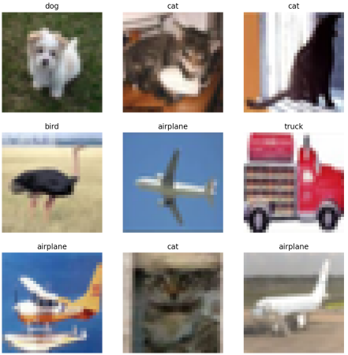
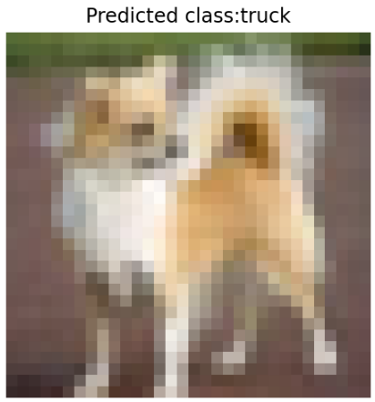
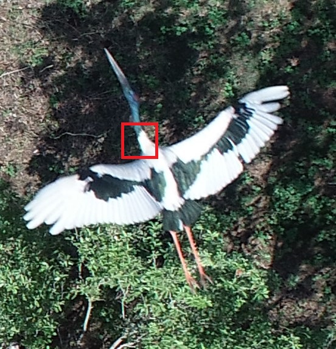
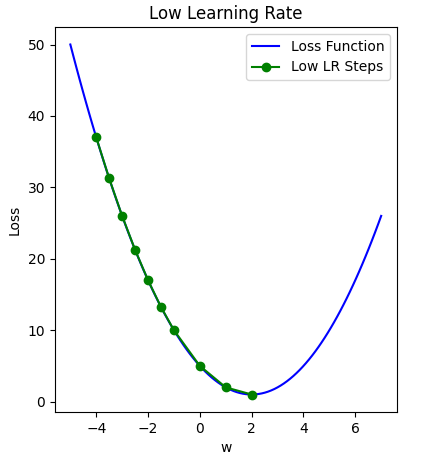
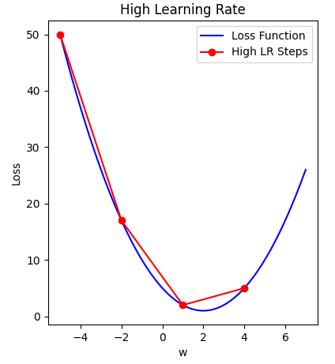
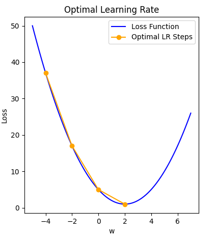
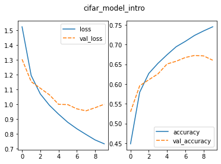

All in One View
Content from Introduction to Deep Learning
Last updated on 2026-06-14 | Edit this page
Estimated time: 10 minutes
Overview
Questions
- What is deep learning and how is it used for images?
- How can I train a simple model to classify images?
Objectives
- Describe what deep learning is and how it can be used for image classification
- Train a simple convolutional neural network (CNN) to classify images
Deep learning for image classification
In this lesson, we will use deep learning to classify images.
Deep learning is a type of machine learning that uses structures called neural networks. These networks learn patterns directly from data by adjusting their internal settings during training.
For image data, deep learning models can learn to recognise shapes, colours, and textures. By combining these simple patterns, they can identify more complex features such as objects in an image.
We will focus on a specific type of model called a Convolutional Neural Network (CNN). CNNs are designed for working with images and are widely used for tasks such as:
- recognising objects in photos
- identifying medical images
- classifying plants, animals, or other categories
In this lesson, we will train a CNN to classify images into different categories.
What is image classification?
Image classification is one of the most common tasks in deep learning and involves assigning a label to an image.
For example, a model might look at an image and decide whether it shows a:
- car or bicycle
- cat or dog
- healthy or diseased plant
In this lesson, we will train a CNN to look at images and predict the correct category for each one.
What we’ll do in this lesson
When working with programming problems, it’s useful to follow a series of steps or a workflow. Some workflows are very simple, while others — like deep learning — involve a few more stages.
In this lesson, we’ll follow a simplified version of a deep learning workflow to train and use an image classification model.
Step 1. Formulate / Outline the problem
First we must decide what we want our Deep Learning system to do. This lesson is about image classification and our aim is to put an image into one of a few categories. Specifically, in our case, we have 5 categories: [‘airplane’, ‘bird’, ‘cat’, ‘dog’, ‘truck’]
Step 2. Identify inputs and outputs
Next identify what the inputs and outputs of the neural network. In our case, the data is images and the inputs could be the individual pixels of the images. We want one output prediction for each potential image.
Step 3. Prepare data
Many datasets are not ready for immediate use in a deep learning and require some preparation. Neural networks can really only deal with numerical data, so any non-numerical data (e.g., images) have to be converted to numerical data.
For this lesson, we use an existing image dataset known as CIFAR-10 (Canadian Institute for Advanced Research).
More information on preparing data is explored in Episode 02 Introduction to Image Data but for now we’ll use a custom-defined function.
Python reminder: functions and methods
In Python, we can use functions in a few different ways:
- Built-in functions available by default:
print()orlen() - Functions from libraries we import:
tf.keras.layers.Conv2D() - Functions we write ourselves:
def
PYTHON
# load the required packages
import tensorflow as tf # neural network
import matplotlib.pyplot as plt # for plotting
import icwithcnn_functions as icfn # pre-defined helpers
### Step 3. Prepare data
# create a list of class names associated with each CIFAR-10 label
class_names = ['airplane', 'bird', 'cat', 'dog', 'truck']
# load the data
train_ds, val_ds, test_ds = icfn.prepare_datasets()OUTPUT
Found 1000 files belonging to 5 classes.
Found 250 files belonging to 5 classes.
Found 250 files belonging to 5 classes.Before starting any analysis, it’s important to check that your data looks the way you expect. Let’s do that now:
Visualise a subset of the CIFAR-10 dataset
PYTHON
# set up plot region, including width, height in inches
fig, axes = plt.subplots(figsize=(5,5))
# add images to plot
for images, labels in train_ds.take(1):
for i in range(9):
ax = plt.subplot(3, 3, i + 1)
plt.imshow(images[i].numpy().astype("uint8"))
plt.title(class_names[labels[i]])
plt.axis("off")
# view plot
plt.show()
Inspect the dataset
Looking at the images above, and knowing you will be asking a computer to label them, what kinds of questions might you ask yourself about this dataset?
Answers will vary.
- Are the images clear and easy to interpret?
- Do the labels seem correct?
- Are the images all the same size?
- Do the images look similar within each category?
- Are there any unusual or unexpected images?
Step 4. Choose a pre-trained model or build a new architecture from scratch
Often we can use an existing neural network instead of designing one from scratch because training a network can take a lot of time and computational resources. There are a number of well publicised networks which have been demonstrated to perform well at certain tasks. If you know of one which already does a similar task well, then it makes sense to use one of these.
If instead we decide to design our own network, then there a lot of decisions that have to be made. Model selection will require iterative experimentation and tweaking before acceptable results can be achieved.
In today’s workshop we want to build an architecture for training
purpurses. For now, similar to dataset preparation, we’ll use a function
already prepared, create_model_intro(), and save the
details for Episode 03 Build a Convolutional
Neural Network.
Step 5. Choose a loss function and optimizer and compile model
To set up a model for training we need to compile it. This is when you set up the rules and strategies for how your network is going to learn.
The loss function tells the training algorithm how far away the predicted value was from the true value.
The optimizer takes information from the loss function and applys some changes to the weights within the network to try to do better. It is through this process that “learning” (adjustment of the weights) is achieved.
We will learn how to choose a loss function and optimizer in more detail in Episode 4 Compile and Train (Fit) a Convolutional Neural Network.
For now, let’s use options that have been proven to work well for image classfiication tasks.
Step 6. Train the model
Now we can start training our neural network. Typically, we train the model by looping over the training data multiple times (called epochs) until performance improves or reaches a stable level.
Your output will begin to print similar to the output below:
OUTPUT
32/32 [==============================] - 0s 5ms/step - loss: 58.7726 - accuracy: 0.2690What does this output mean?
This output is printed during the fit phase, i.e. training the model against known image labels:
- It took 32 steps to look at all of the training
images once (called an
epoch) -
lossshows how wrong the model’s predictions are (lower is better) -
accuracyshows how often the model is correct (higher is better)
Is our model doing well?
Considering the loss and accuracy values
from the training above:
- What do these values tell you about how well the model is performing?
- Is this what you would expect at this stage?
- Can you think of any ways that might help improve these values?
Answers may vary.
- The accuracy is quite low, so the model is not making many correct
predictions yet
- The loss is high, which suggests the model’s predictions are still
far from the true labels
- This is expected, since the model has only just started training and is very simple
- Train for longer, use a more complex model, use more data
Step 7. Perform a Prediction/Classification
After training the network we can use it to perform predictions. This is how you would use the network after you have fully trained it to a satisfactory performance. The predictions performed here on a special hold-out set is used in the next step to measure the performance of the network. Make sure the images you use to test are prepared the same way as the training images.
To make a single prediction we need to first extract a single image and its associated label from our test dataset and then use our model to predict the class of that image.
PYTHON
# extract image and label for first image
for images, labels in test_ds.take(1):
first_image = images[0]
first_label = labels[0]
# use the model to predict class
prediction = model_intro.predict(tf.expand_dims(first_image, axis=0))
print("Predict:", prediction)
# extract class name with highest probability
predicted_label = tf.argmax(prediction[0])
print("Predicted class:", class_names[predicted_label])
print("True class:", class_names[first_label])OUTPUT
1/1 [==============================] - 0s 11ms/step
Predict: [[3.0071956e-01 9.7787231e-20 6.9927925e-01 5.2796623e-32 1.1614857e-06]]
Predicted class: cat
True class: airplaneCongratulations, you just created your first image classification model! Notice that the model doesn’t just give one answer — it assigns a probability to each class. The class with the highest probability becomes the prediction.
Was the classification correct? Let’s plot the first test image with its true label:
PYTHON
# display image
plt.imshow(test_images[0])
plt.title('Predicted:' + class_names[predicted_label])
plt.axis("off")
plt.show() 
Interpreting the prediction
Compare the model prediction with the true class name.
- What does this tell you about the model’s performance?
- Why might the model have made this mistake?
Answers may vary.
- The model made an incorrect prediction
- This shows the model has not yet learned enough to reliably
distinguish between classes
- This is expected, since the model is simple and has only trained for
a short time
- The image itself may also be unclear or difficult to classify
Clearly, our model can be improved — we’ll look at ways to do this later.
For now, we’ve trained a model and used it to make a prediction. The next step is to see how well it performs on data it hasn’t seen before.
Step 8. Measure Performance
Once we trained the network we want to measure its performance on data that was not part of the training process, called a test dataset. Although there are many indicators of how well our network performs - called metrics - often the chosen metric(s) will depend on the type of task.
Step 9. Tune Hyperparameters
When building image classification models in Python, especially using libraries like TensorFlow or Keras, the process involves not only designing a neural network but also choosing the best values for various parameters set by the person configuring the model - these are known as hyperparameters. Searching for the best options for your dataset can enhance model performance.
Step 10. Share Model
Once we’re happy with how our model performs, we can save it and share it with others. This includes both the model structure and what it has learned, so others can use it, with or without retraining.
To share the model we must save it.
We will return to each of these workflow steps throughout this lesson and discuss each component in more detail.
- Deep learning uses neural networks to learn patterns directly from data.
- Convolutional neural networks (CNNs) are commonly used for image classification.
- Training a model involves compiling it, fitting it to data, and making predictions.
- Model performance may be imperfect at first and can be improved with further training and tuning.
Content from Introduction to Image Data
Last updated on 2026-06-14 | Edit this page
Estimated time: 33 minutes
Overview
Questions
- How is image data organised for this workshop?
- How do I load image data into Python for deep learning?
- What are training, validation, and test datasets used for?
Objectives
- Describe how the workshop image dataset is organised into folders.
- Load image data using
keras.utils.image_dataset_from_directory(). - Inspect images, labels, and class names in a dataset.
- Explain the roles of training, validation, and test datasets.
In Episode 1, we used prepared data to train a simple image classification model.
In this episode, we’ll take a closer look at how image datasets are organised and loaded into Python.
Depending on your situation, you will either use a pre-existing dataset, prepare your own data for training, or some combination of the two.
In this workshop, we’ll use a prepared dataset so we can focus on the deep learning workflow but in real-world projects, you may need to collect, label, resize, and split your own images.
Before jumping into more specific tasks, it’s important to understand that images on a computer are stored as numbers. For colour images, these numbers represent red, green, and blue (RGB) values.
Images are data
Images on a computer are stored as rectangular arrays of hundreds, thousands, or millions of discrete “picture elements,” otherwise known as pixels. Each pixel can be thought of as a single square point of coloured light.
For example, consider this image of a Jabiru, with a square area designated by a red box:

Now, if we zoomed in close enough to the red box, the individual pixels would stand out:
Note each square in the enlarged image area (i.e. each pixel) is all one colour, but each pixel can be a different colour from its neighbours. Viewed from a distance, these pixels seem to blend together to form the image.
Image data in this workshop
In this workshop, we use a small subset of the CIFAR-10 dataset containing images from five classes:
- airplane
- bird
- cat
- dog
- truck
For learning purposes, and to make computation faster, a much smaller, random selection of images from the full dataset was used.
Most importantly, the data was split it into three distinct subsets: train, validation and test.
We use different parts of the dataset for different purposes:
- Training set: used to teach the model
- Validation set: used to check how the model is doing while we develop it
- Test set: used at the end to evaluate performance on unseen data
Keeping these sets separate helps us judge how well the model is likely to perform on new images.
Dataset organisation matters
The way your data is organised matters - it affects whether and how easily it can be used for image classification tasks.
For example, to use the
tf.keras.utils.image_dataset_from_directory() function
packaged with Tensorflow, we use folder names to indicate which split
the data belongs to and what class name to use as the label. This saves
us from having to label each image individually.
How our images are organised
Our images are stored in folders; each class has its own folder and the data is split into training, validation, and test sets. For example:
cifar10_images_small/
|
├── train/
│ ├── airplane/
│ ├── bird/
│ ├── cat/
│ ├── dog/
│ └── truck/
├── val/
│ ├── airplane/
│ ├── bird/
│ ├── cat/
│ ├── dog/
│ └── truck/
└── test/
├── airplane/
├── bird/
├── cat/
├── dog/
└── truck/Understanding the dataset structure
Look at the folder structure for the dataset.
- How many classes are included?
- How does Keras know which label belongs to each image?
- There are five classes.
- Keras uses the folder names as the class labels.
Understanding the dataset contents
The dataset contains 1500 images across 5 classes and randomly split into training, validation, and test sets.
- How many images would you expect in each split?
- How many images per class would you expect in the training set if it was balanced?
Answers may vary. For a 60:20:20 split you might expect:
- Training: 900 images
- Validation: 300 images
- Test: 300 images
If training set had 900 images, you would expect 180 images per class in a well-balanced set.
Load the datasets
In the last episode, we used the icfn.prepare_datasets()
helper function in icwithcnn_functions.py to prepare our
datasets:
Let us now see how to write the code inside that helper function. This is the same type of dataset we used in Episode 1 — here we’re just seeing how it is created.
We’ll start by preparing the training dataset with the understanding that the The other two splits sets will be prepared similarly.
Using the tf.keras.utils.image_dataset_from_directory()
function, we specify:
- the file path to the top level folder for the data
- the size of the images in pixels (
image_size) - how many images to work with at a time
(
batch_size) - whether we want to
shufflethe images or load them sequentially - whether we want everyone in the class to have the same order of
images (
seed)
PYTHON
import tensorflow as tf
# create training dataeset from folder of cifar images
train_ds = tf.keras.utils.image_dataset_from_directory(
"../data/cifar10_images_small/train",
image_size = (32, 32),
batch_size = 32,
shuffle = True,
seed = 32
)
print(train_ds)OUTPUT
Found 1000 files belonging to 5 classes.
Train_ds: <_PrefetchDataset element_spec=(TensorSpec(shape=(None, 32, 32, 3), dtype=tf.float32, name=None), TensorSpec(shape=(None,), dtype=tf.int32, name=None))>The object returned by this function might look unfamiliar. That’s because, instead of loading all the images at once, it loads them in batches as needed.
How do we inspect what was loaded?
We can extract class names directly from the dataset:
OUTPUT
['airplane', 'bird', 'cat', 'dog', 'truck']We can look at a single batch to find information about the training images and labels.
PYTHON
# inspect one batch of images and labels
for images, labels in train_ds.take(1):
print("Train images batch shape:", images.shape)
print("Train labels batch shape:", labels.shape)OUTPUT
Train images batch shape: (32, 32, 32, 3)
Train labels batch shape: (32,)These numbers represent (batch size, image height, image width, colour channels):
- There are 32 images in this batch
- Each image is 32 pixels high and 32 pixels wide
- Each image has 3 colour channels (RGB)
- There is one label for each image in the batch
Finally, we can look at the image data types and pixel values:
PYTHON
# inspect image data types and pixel values
for images, labels in train_ds.take(1):
print("Data type: ", images.dtype)
print("Pixel value range:", images[0].numpy().min(), images[0].numpy().max())OUTPUT
Data type: <dtype: 'float32'>
Pixel value range: 15.0 253.0A note about pixel values
The images are loaded with pixel values between 0 and 255.
In most cases, we rescale these values to make training more efficient.
In this workshop, we will do this inside the model before training.
On your own - prepare the Test dataset
Using what we’ve learned in this lesson with the training dataset, perform the same steps for the test dataset.
- Write the code to load the test data
- Hint 1: Turn
shuffleoff - Hint 2: Remove the
seed
- Inspect the
testdataset and find out:
- dimensions of the images and labels
- class names
- total number of images
- number of images in each of the five classes (optional)
PYTHON
# create test dataset from folder of cifar images
test_ds = tf.keras.utils.image_dataset_from_directory(
"../data/cifar10_images_small/test",
image_size = (32, 32),
batch_size = 32,
shuffle = False,
)
# class names
print("Test class names: ", test_ds.class_names)
# dimensions of the images and labels
for images, labels in test_ds.take(1):
print("Test images batch shape:", images.shape)
print("Test labels batch shape:", labels.shape)
# total number of images
# 250 as noted previously
# images in each class
# ????Now we understand how to prepare our data works we are ready to learn how to build a CNN.
- Images consist of pixels arranged in a particular order.
- Image datasets can be organised into folders where each folder represents a class.
-
image_dataset_from_directory()lets us load images without writing custom data preparation code. - Images are loaded in batches and represented as numerical arrays.
- Training, validation, and test sets are used to build and evaluate models.
Content from Build a Convolutional Neural Network
Last updated on 2026-06-14 | Edit this page
Estimated time: 47 minutes
Overview
Questions
- What is a neural network?
- How is a convolutional neural network (CNN) different from an ANN?
- What are the types of layers used to build a CNN?
Objectives
- Understand how a convolutional neural network (CNN) differs from an artificial neural network (ANN).
- Explain the terms: kernel, filter.
- Know the different layers: convolutional, pooling, flatten, dense.
In Episode 1, we used a pre-defined model to train our classifier.
In this episode, we’ll build that model ourselves, one step at a time.
We don’t need to understand all the maths behind neural networks — instead, we’ll focus on how to put the pieces together.
Neural Networks
A neural network is a series of layers that transform input data step by step. A convolutional neural network (CNN) is a type of neural network designed specifically for images.
It learns by passing image data through a series of layers, each one transforming the data slightly, until it can make a final prediction.
Step 4. Build an architecture
We build a CNN by stacking layers together.
Each layer takes some input, transforms it, and passes it to the next layer, i.e., the output from each layer becomes the input to the next layer.
There are three main components of a neural network:
- CNN Part 1. Input Layer
- CNN Part 2. Hidden Layers
- CNN Part 3. Output Layer
CNN Part 1. Input Layer
We start by telling Keras the shape of our images. Recall the size of our images are 32x32 pixels with 3 colour channels (RGB).
CNN Part 2. Hidden Layers
The next component consists of the so-called hidden layers of the network.
In a neural network, the input layer receives the raw data, and the output layer produces the final predictions or classifications. These layers’ contents are directly observable because you can see the input data and the network’s output predictions.
However, the hidden layers, which lie between the input and output layers, contain intermediate representations of the input data.
In a CNN, the hidden layers typically consist of convolutional, pooling, reshaping (e.g., Flatten), and dense layers.
Convolutional Layers
Convolutional layers look for simple patterns in images, such as edges or textures.
To create a convolutional layer, we need to specify:
- the number of features to learn,
filters - the size of the search window,
kernel_size- smaller kernels are used to capture fine-grained features
- odd-sized windows are common because they have a centre pixel
- the activation function to use,
activation
When building a model, each layer takes the output from the previous layer as its input.
PYTHON
# hidden layers
x_intro = tf.keras.layers.Conv2D(filters=16,
kernel_size=(3,3),
activation='relu')(inputs_intro)Pooling Layers
Pooling layers reduce the size of the image, helping the model focus on the most important features.
To create a pooling layer, we need to specify how much to reduce the
image by using pool_size. A pool size of (2, 2) reduces the
width and height of the image by half.
Deep Learning
We often repeat this two-layer pattern to learn more complex features by, e.g. increasing the number of filters:
Up to this point, our model has been working with 2D image data.
Next, we convert it into a format suitable for classification.
Dense layers
To make a predcition, we use a dense (fully connected) layer after
reshaping. This is because Dense layers expect 1D
input.
To create a dense layer, we need to specify:
- the number of outputs to produce,
units - the activation function,
activation
For classification problems: - units is the number of
classes
- softmax converts the outputs into probabilities that add
up to 1
Putting it all together
Once you decide on the initial architecture of your CNN, the last step to create the model is to bring all of the parts together:
PYTHON
model_intro = tf.keras.Model(inputs = inputs_intro,
outputs = outputs_intro,
name = "cifar_model_intro")We now have a simple convolutional neural network!
We can put this code inside a function definition like we used in Episode 1.
Turn your neural network into a function
Use the architecture from this episode to define a function called
create_model_intro.
- Hint 1 Your function should take two arguments,
input_shapeandnum_classes - Hint 2 Your function should return a model object
PYTHON
# function that defines an introductory convolutional neural network
def create_model_intro(input_shape=(32,32,3), num_classes=5):
# CNN Part 1
# Input layer of 32x32 images with three channels (RGB)
inputs_intro = tf.keras.Input(shape=input_shape)
# CNN Part 2
x_intro = tf.keras.layers.Conv2D(filters=16,
kernel_size=(3,3),
activation='relu')(inputs_intro)
x_intro = tf.keras.layers.MaxPooling2D(pool_size=(2,2))(x_intro)
x_intro = tf.keras.layers.Flatten()(x_intro)
# CNN Part 3
# Output layer with one unit for each class and softmax activation
outputs_intro = tf.keras.layers.Dense(units=num_classes,
activation='softmax')(x_intro)
# create the model
model_intro = tf.keras.Model(inputs = inputs_intro,
outputs = outputs_intro,
name = "cifar_model_intro")
return model_introViewing the model
Once a model is created, we can look at a summary of its structure.
PYTHON
# create the introduction model
model_intro = create_model_intro()
# view model summary
model_intro.summary()OUTPUT
Model: "cifar_model_intro"
_________________________________________________________________
Layer (type) Output Shape Param #
=================================================================
input_1 (InputLayer) [(None, 32, 32, 3)] 0
conv2d (Conv2D) (None, 30, 30, 16) 448
max_pooling2d (MaxPooling2 (None, 15, 15, 16) 0
D)
flatten (Flatten) (None, 3600) 0
dense (Dense) (None, 5) 18005
=================================================================
Total params: 18453 (72.08 KB)
Trainable params: 18453 (72.08 KB)
Non-trainable params: 0 (0.00 Byte)
_________________________________________________________________In the model summary you’ll see:
- the layers in order
- how the data shape changes
- how many parameters the model learns
Don’t worry about all the details — this is just a useful way to inspect your model.
How do we choose this architecture?
You might be wondering how we decided on the number of layers and their settings.
In practice, there’s no single “correct” answer — building models often involves some trial and error.
A common approach is to:
- start with a simple model
- train it and see how it performs
- gradually add layers and adjust settings to improve it
We’ll explore this idea later in the lesson.
We have a model — now what?
We now have a simple CNN that can take an image and produce a prediction.
At the moment, the model hasn’t learned anything yet — it still needs to be trained on our data.
In the next step, we’ll:
- tell the model how to learn (choose a loss function and
optimizer)
- train it on our training data
This is where the model starts improving and learning patterns from the images.
- Convolutional neural networks (CNNs) are designed for working with image data.
- CNNs are built by stacking layers, where each layer transforms the data and passes it to the next layer.
- Convolutional layers look for simple patterns in images (e.g. edges and textures).
- Pooling layers reduce the size of the data, helping the model focus on important features.
- The Flatten layer converts image data into a format suitable for classification.
- Dense layers are used to produce the final prediction.
Content from Compile and Train (Fit) a Convolutional Neural Network
Last updated on 2026-06-14 | Edit this page
Estimated time: 47 minutes
Overview
Questions
- How do you compile a convolutional neural network (CNN)?
- What is a loss function and an optimizer?
- How do you train (fit) a CNN?
- How can we check how well our model is learning during training?
Objectives
- Compile a CNN by choosing an optimizer, loss function, and metric.
- Train a CNN using
Model.fit(). - Explain what loss and accuracy represent during training.
- Recognise signs of overfitting in training results.
In the previous episode, we built the structure of our convolutional neural network. Now it’s time to make it learn.
In this episode, we’ll compile the model, train it on our data, and look at how its performance changes during training.
Step 5. Choose a loss function and optimizer and compile model
Before we can train the model, we need to compile it.
Compiling sets up how the model will learn by specifying:
- the
optimizer(how the model updates its weights) - the
lossfunction (how wrong the predictions are) - the
metrics(how we measure performance)
We do this using the Model.compile() function:
Optimizer
An optimizer controls how the model updates its weights during training.
Here we’ll use one of the most common choices, 'adam',
which works well for many image classification tasks.
Optimizers have settings such as the learning rate, which controls how quickly the model learns. We’ll use the default values here.
ChatGPT
Learning rate is a hyperparameter that determines the step size at which the model’s parameters are updated during training. A higher learning rate allows for more substantial parameter updates, which can lead to faster convergence, but it may risk overshooting the optimal solution. On the other hand, a lower learning rate leads to smaller updates, providing more cautious convergence, but it may take longer to reach the optimal solution. Finding an appropriate learning rate is crucial for effectively training machine learning models.
The figure below illustrates how a small learning rate will not traverse toward the minima of the gradient descent algorithm in a timely manner, i.e. number of epochs.

On the other hand, specifying a learning rate that is too high will result in a loss value that never approaches the minima. That is, ‘bouncing between the sides’, thus never reaching a minima to cease learning.

Finally, a modest learning rate will ensure that the product of multiplying the scalar gradient value and the learning rate does not result in too small steps, nor a chaotic bounce between sides of the gradient where steepness is greatest.

Loss function
The loss function measures how wrong the model’s predictions are.
During training, the model tries to reduce this value — lower loss means better predictions.
For our classification problem, we’ll use
'sparse_categorical_crossentropy', which works when each
image belongs to one class.
Metrics
A metric is used to measure how well the model is performing.
For classification problems, we commonly use 'accuracy',
which tells us how often the model’s predictions are correct.
Unlike the loss function, metrics are used to monitor performance — they don’t directly affect how the model learns.
OUTPUT
# compile the model
model_intro.compile(optimizer = 'adam',
loss = 'sparse_categorical_crossentropy',
metrics = ['accuracy'])Step 6. Train (Fit) model
Now that our model is compiled, we are ready to train it.
Training is where the model learns from the data by making predictions, comparing them to the true labels, and gradually improving over time.
We do this using the Model.fit() function. It returns a
history object, which stores the loss and accuracy values from training,
and can be specifyied with:
- the training data,
x - how many times to loop through the data,
epochs - optionally,
validation_datato monitor performance during training
During training, the model:
- makes predictions
- compares them to the true labels
- updates its weights to improve
The Model.fit() function
Monitor Training Progress (aka Model Evaluation during Training)
After training, we can check how well the model learned by looking at the loss and accuracy over time.
We stored this information in the history_intro object
returned by Model.fit(). We can convert this to a data
frame and plot it:
PYTHON
import seaborn as sns
import pandas as pd
# convert the model history to a dataframe for plotting
history_intro_df = pd.DataFrame.from_dict(history_intro.history)
# plot the loss and accuracy
fig, axes = plt.subplots(1, 2)
fig.suptitle('cifar_model_intro')
sns.lineplot(ax=axes[0], data=history_intro_df[['loss', 'val_loss']])
sns.lineplot(ax=axes[1], data=history_intro_df[['accuracy', 'val_accuracy']])
The two plots show how the model changed during training:
-
Loss (left): how wrong the model is — lower is
better
- Accuracy (right): how often the model is correct — higher is better
Each plot shows:
- the training data (solid line)
- the validation data (dashed line)
We expect:
- loss to decrease over time
- accuracy to increase over time
Inspect the training curves
Look at the plots and answer:
- What happens to the loss during training?
- What happens to the accuracy?
- Do the training and validation lines behave similarly?
- Based on this, do you think the model will perform well on new data?
- Loss decreases over time, which shows the model is improving
- Accuracy increases over time
- The validation lines improve at first, but then level off
- This suggests the model is starting to overfit and may not perform as well on new data
What is overfitting?
In the plots, we can see that:
- training performance keeps improving
- validation performance stops improving
This is called overfitting. Overfitting happens when the model learns the training data too well, including details that don’t generalize to new data. As a result, the model performs well on the training data but less well on new images. Signs of overfitting include:
- training loss keeps decreasing
- validation loss stops improving or increases
- training accuracy is much higher than validation accuracy
How can we address overfitting?
There are several ways to reduce overfitting. Common approaches include:
- collecting more training data
- simplifying the model (fewer layers or parameters)
- adding techniques that help the model generalise better
These approaches aim to help the model focus on general patterns rather than memorising the training data. In a later episode, we’ll look at one of these techniques: dropout.
What did we do?
In this episode, we took our CNN and made it learn from data.
We:
- compiled the model by choosing an optimizer, loss function, and
metric
- trained the model using
Model.fit()
- monitored how its performance changed during training
By plotting the loss and accuracy, we could see how well the model was learning and identify when it started to overfit.
We now have a trained model, and understand how to check whether it is learning effectively. In the next part of the workflow, we’ll use this model to make predictions and evaluate how well it performs on new data.
- Use
Model.compile()to set how a model will learn. - The optimizer controls how the model updates its weights.
- The loss function measures how wrong the model’s predictions are.
- Metrics such as accuracy tell us how well the model is performing.
- Use
Model.fit()to train the model on data. - Training and validation loss and accuracy help us monitor learning.
- Overfitting occurs when a model performs well on training data but less well on new data.
Content from Evaluate a Convolutional Neural Network and Make Predictions (Classifications)
Last updated on 2026-06-14 | Edit this page
Estimated time: 31 minutes
Overview
Questions
- How do you use a trained CNN to make predictions?
- How do you convert model predictions into class labels?
- How do you evaluate model performance on a test dataset?
Objectives
- Use a trained CNN to make predictions on new data.
- Convert model outputs into predicted class labels.
- Evaluate model performance using accuracy.
- Interpret model performance using a confusion matrix.
Step 7. Perform a Prediction
Now that we have a trained model, we can use it to make predictions on new data.
We’ll use our test dataset, which contains images the model has not seen before.
Step 8. Measuring performance
Now that we have predictions, we can measure how well our model performs on the test dataset.
Accuracy
A simple way to evaluate our model is to calculate its accuracy — how often the predictions match the true labels. To do this, we also need the true labels from our test dataset.
We can do this using:
PYTHON
from sklearn.metrics import accuracy_score
test_labels = np.concatenate([y for x, y in test_ds], axis=0)
test_acc = accuracy_score(y_true=test_labels, y_pred=predicted_labels)
print('Accuracy:', round(test_acc,2))OUTPUT
Accuracy: 0.67Accuracy is the proportion of correct predictions.
For example, an accuracy of 0.67 means the model correctly classified 67% of the test images.
Confusion matrix
Accuracy gives us an overall score, but it doesn’t tell us which classes the model is getting right or wrong.
A confusion matrix helps us see this.
PYTHON
from sklearn.metrics import confusion_matrix
conf_matrix = confusion_matrix(y_true=test_labels, y_pred=predicted_labels)
print(conf_matrix)OUTPUT
[[ 9 15 17 5 4]
[ 3 17 16 8 6]
[12 10 13 5 10]
[ 7 13 10 5 15]
[10 12 12 4 12]]In a confusion matrix:
- rows represent the true labels
- columns represent the predicted labels
Values along the diagonal are correct predictions.
We can make this easier to read using a heatmap:
Darker values along the diagonal indicate correct predictions.
Off-diagonal values show where the model is confusing one class with another.

Inspect model performance
Look at the confusion matrix and answer:
- Does the model perform equally well across all classes?
- Which classes seem to be confused with each other?
- How does this compare to the accuracy value?
- The model performs better on some classes than others
- Some classes are frequently confused with similar ones
- Accuracy gives an overall score, but the confusion matrix shows where errors occur
What did we do?
In this episode, we used our trained CNN to make predictions on new data and evaluate how well it performs.
We:
- used the model to generate predictions
- converted those predictions into class labels
- measured performance using accuracy
- used a confusion matrix to better understand the results
We can now see not just how often the model is correct, but also where it is making mistakes.
In the next part of the workflow, we’ll look at ways to improve our model and make more accurate predictions.
- Use
Model.predict()to make predictions with a trained model. - Model outputs represent confidence values for each class.
- Use
argmaxto convert model outputs into predicted class labels. - Accuracy measures how often predictions are correct.
- Confusion matrices help identify which classes are predicted correctly and where errors occur.